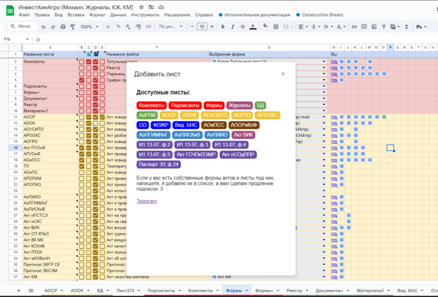
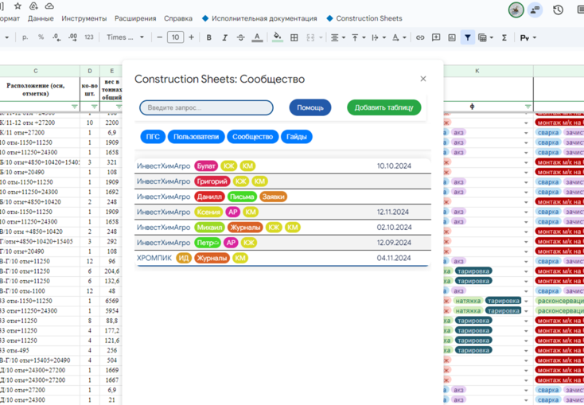
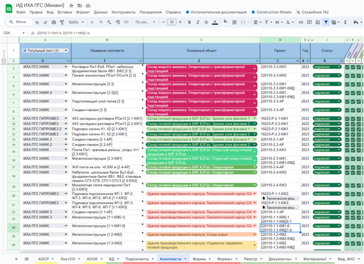
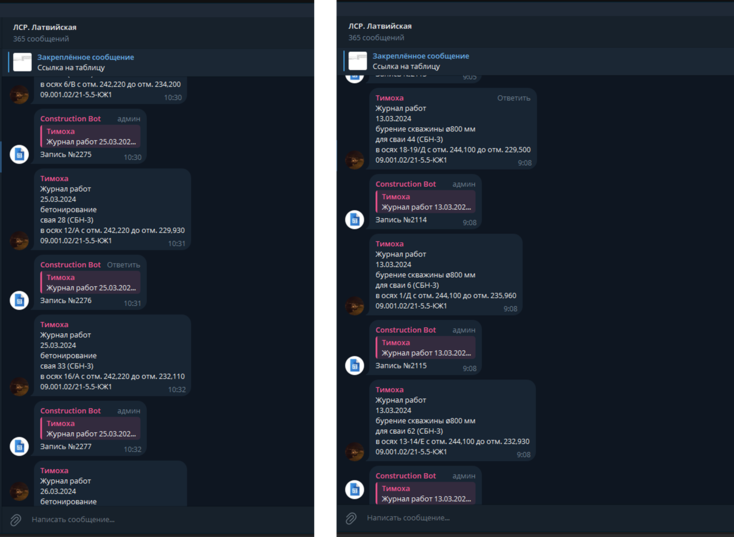
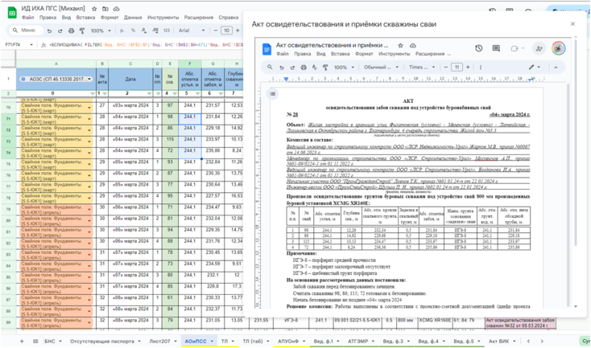
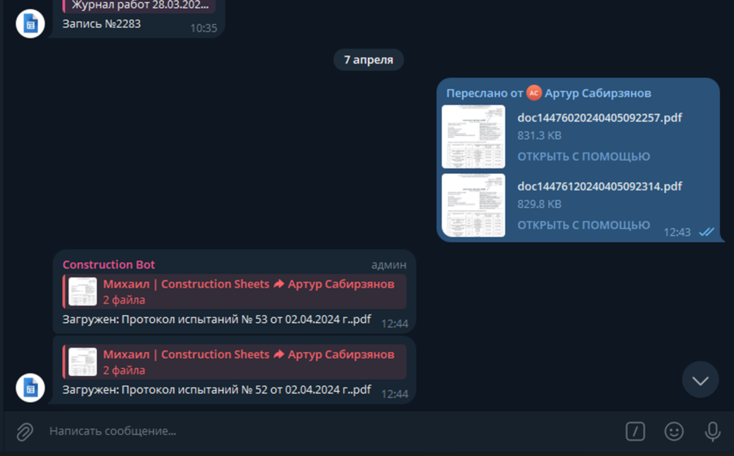
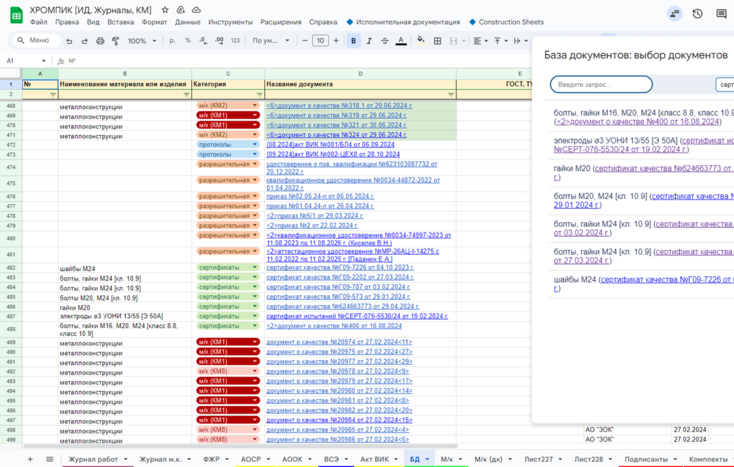
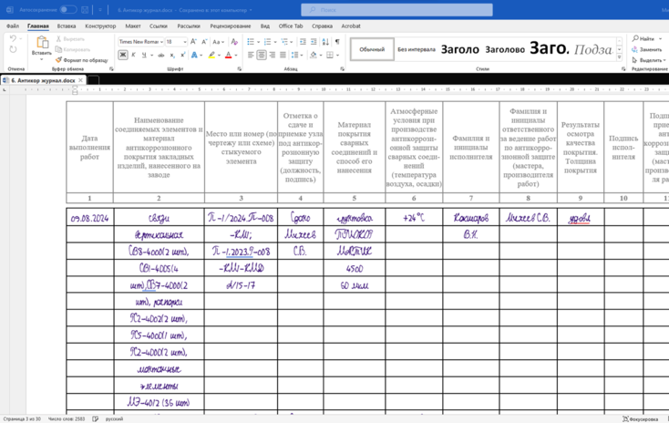

Как автоматизировать работу ПТО на примере Google таблиц
На этом уроке вы научитесь автоматизировать подготовку исполнительной документации без закупки дорогостоящего ПО с помощью сервиса для инженеров ПТО. Вы сможете быстро собрать исходные документы с подрядчиков в едином месте. Решение для автоматизации разработал опытный инженер ПТО, который в два раза быстрее сформировал полный пакет ИД на трех крупных объектах.
Как сервис автоматизации ИД поможет ускорить работу с документацией
Сервис использует простые инструменты. Например, Google-таблицы и Telegram. Это позволяет настраивать сервис под конкретный объект без трудозатратных доработок. А также помогает быстро обучать инженеров ПТО и внедрять сервис в работу. При этом не приходится скачивать закрытые приложения – вся работа ведется в Google-таблицах.

Исполнительная документация в сервисе автоматически собирается из общих строк, которые вы заполняете на свой объект. На основании такой базовой информации сразу формируется несколько типовых актов и другая документация. Программа также позволяет создавать свои акты, которые необходимы вам в силу специфики объекта. Что еще сможете автоматизировать с сервисом, смотрите в чек-листе.
Теперь давайте перейдем к наглядным примерам, как сервис помог быстро и легко оформить исполнительную документацию при строительстве реальных объектов.
Пример 1. Объект: завод по производству удобрений
Период строительства. Работа на объекте шла с августа 2023-го по март 2024 года.
Особенности объекта. Генподрядная организация выполняла следующие работы: монтаж м/к, ж/б конструкции, устройство монолитных плит перекрытия, фундаментов, свай, монтаж сэндвич-панелей. В рамках ИД это трудоемкие работы. В команду ПТО входило пять человек. Руководство стремилось своевременно сдать объект, несмотря на отставание с оформлением исполнительной документации.
На объекте было большое отставание сдачи исполнительной документации от факта работ. Закрывали исполнительную документацию медленно по четырем причинам:
- много актов из-за чрезмерной детализации работ;
- много зданий и титулов;
- ПТО без опыта и профильного образования;
- дотошная проверка ИД, которая вынуждала выполнять пожелания стройконтроля.
В этих условиях решили испытать возможности сервиса по подготовке ИД. Начали вести через него все новые акты.
Что сделали на объекте. Стали формировать в сервисе все формы актов, АООК автоматически на основании АОСР, перечни и приложения ко всем актам.

Распределили комплекты актов и сделали стадии готовности по ним. Добавили связанность всех таблиц, чтобы можно было видеть прогресс по сдаче папок ИД каждого участника проекта. Синхронизировали общий журнал работ и специальные журналы: после появления новой записи в ОЖР сразу формировался специальный журнал работ.

Какой получили результат. Работа в сервисе позволила наглядно оценивать и планировать работу. Организовали ведение исполнительной документации в одном месте с простым доступом для всех участников проекта.

Скорость составления актов и процесс исправления замечаний ускорились. Реестры и АООК и формировались полностью автоматически. Сервис экономил полгода работы штата ПТО.
Посмотрите первое видео от разработчика программы, как внедряли сервис в работу ПТО.
Источник и ограничения: видеоблок платформы не содержит открытого адреса файла.
Пример 2. Объект: многоквартирный жилой дом
Период строительства. Работа на объекте шла с февраля по апрель 2024 года.
Особенности объекта. Небольшой объект из-за размеров и сроков вели удаленно. Нужно было устроить 155 буронабивных свай. Заказчику потребовался отдельный комплект актов на каждую буронабивную сваю. Пришлось формировать 456 актов.
Что сделали на объекте. Решили использовать Telegram-бот, который позволял оперативно получать информацию о работах с участка. И это без необходимости «сканировать печатный ОЖР», а сразу брать оцифрованную информацию. Это ускорило и упростило оформление ИД.

Прораб вел два вида журналов:
- ведомость БНС с информацией для «геологических актов» (АОиПСС) и журнал бетонных работ;
- журнал работ с информацией для ОЖР и АОСР.
Процесс автоматизировали так, что на каждую его запись автоматически формировался АОСР. А по ведомости БНС автоматически формировались «геологические акты». Информации хватало, чтобы моментально формировать акты АОиПСС на основе данных Telegram-бота. Так же получилось и с журналами входного контроля, которые привязали к актам входного контроля.

Разработчики пытались поставить на вооружение нейросеть YandexGPT. Начали разрабатывать базу документов в программе. Хотели упростить ввод однотипных данных о паспортах на бетон. Написали небольшую функцию в Telegram-боте, которая определяла номер и дату паспорта на бетон и записывала информацию в Google-таблицу. Эксперимент был удачным, но функцию не оптимизировали из-за высокой стоимости обработки одного документа. Для крупного объекта – это большие затраты, поэтому эксперимент пришлось закончить.

Какой получили результат. Добились максимальной степени автоматизации процессов. Автоматизировали реестры, АООК, АОиПСС, частично АОСР. Организовали простой контроль за работами через беседу в Telegram. Полностью исключили отставание факта работ от формирования документации.
Посмотрите второе видео от разработчика программы, как внедряли сервис в работу ПТО.
Источник и ограничения: видеоблок платформы не содержит открытого адреса файла.
Пример 3. Объект: производственный цех
Период строительства. Объект начали вести в августе 2024 года до настоящего времени.
Особенности объекта. Полноценный корпус завода. Монтаж металлоконстукций в размере 7000 тн, а также 40 тыс. кв.м сэндвич-панелей. Исполнительную документацию формируют удаленно.
Что сделали на объекте. Разработали базу и обеспечили хранение в сервисе всех необходимых документов: о качестве на материалы, протоколов, разрешительной документации.

Впервые опробовали рукописные журналы, которые формировались прямо в программе. Рукописный шрифт применили по желанию заказчика.

Использовали улучшенные алгоритмы Telegram-бота. Автоматизировали составление АОСР на основании данных с участков. Через бота прорабы заносили данные с соответствующих участков и вели два вида журналов:
- журнал металлоконструкций с информацией для АОСР: в нем указывали информацию о марках, количестве, дате монтажа;
- журнал работ с информацией для ОЖР, СЖР: журнала монтажа строительных конструкций, сварки, АКЗ, высокопрочных соединений, тарировки.
В дальнейшем через журнал металлоконструкций прорабы подавали информацию о сэндвич-панелях, поскольку структура информации дублирует структуру по монтажу металлоконструкций. Информацию о смонтированных конструкциях запрашивали еженедельно. Потому что ежедневно прорабы не успевали, а дольше недели ‒ забывали.
На исполнительную документацию каждый месяц тратили не больше половины дня. За это время готовили на печать комплект актов, журналов в рукописном формате, паспортов, схем и протоколов, реестр, титульный лист. Автоматически проверяли опечатки, пробелы и ошибки. И делали все на формулах Google-таблиц. Программа позволила формировать рукописные СЖР и печатать комплекты ИД каждый месяц. Также по журналу металлоконструкций автоматически формировали ведомости смонтированных элементов (ВСЭ/ВОР). Смотрите в презентации, что помог упорядочить сервис.
Встроенный материал · штатный PDF-экспорт
Открыть сохранённый PDF · Исходная страница
Текст и изображения исходной страницы
Как вели ИД на заводе по производству химических соединений

Создали лист в Google-таблицах с ведомостью марок по КМД
Сразу стало видно, какие паспорта КМД есть, а каких нет. Какие марки КМД уже смонтированы, а какие еще остались.
Создали лист в Google-таблице для сбора исходников
На него через программу Screenshot reader перенесли с каждого паспорта м/к ведомость отгруженных марок. Так собрали и обработали информацию о паспортах и марках металла.
Создали журнал монтажа металлических конструкций
Создали лист на основе журнала металлоконструкций
Как вели ИД на заводе по производству химических соединений
Создали лист в Google-таблицах с ведомостью марок по КМД
Сразу стало видно, какие паспорта КМД есть, а каких нет. Какие марки КМД уже смонтированы, а какие еще остались.
Создали лист в Google-таблице для сбора исходников
На него через программу Screenshot reader перенесли с каждого паспорта м/к ведомость отгруженных марок. Так собрали и обработали информацию о паспортах и марках металла.
Создали журнал монтажа металлических конструкций
Создали лист на основе журнала металлоконструкций
Какой получили результат. Сократили время на ежемесячную подготовку исполнительной документации. Основную работу выполнили в первые месяцы строительства объекта. Упростили отчетность прорабов и синхронизовали записи между ОЖР и СЖР. Загрузили большую часть паспортов в систему. Остальное заняло немного времени и позволило формировать полный комплект актов и журналов о работах за месяц всего за пару часов. Автоматизировали большую часть процессов в подготовке ИД.
Посмотрите третье видео от разработчика программы, как внедряли сервис в работу ПТО.
Источник и ограничения: видеоблок платформы не содержит открытого адреса файла.
Поздравляем, вы на финишной прямой! Позади пять модулей и только итоговый тест отделяет вас от получения удостоверения по программе «Исполнительная документация в строительстве». Надеемся, что это обучение было для вас полезным. Успехов в прохождении программы!
{kind=link}
{kind=link}
{kind=link}
{kind=link}
{kind=link}
{kind=link}
{kind=link}
{kind=link}